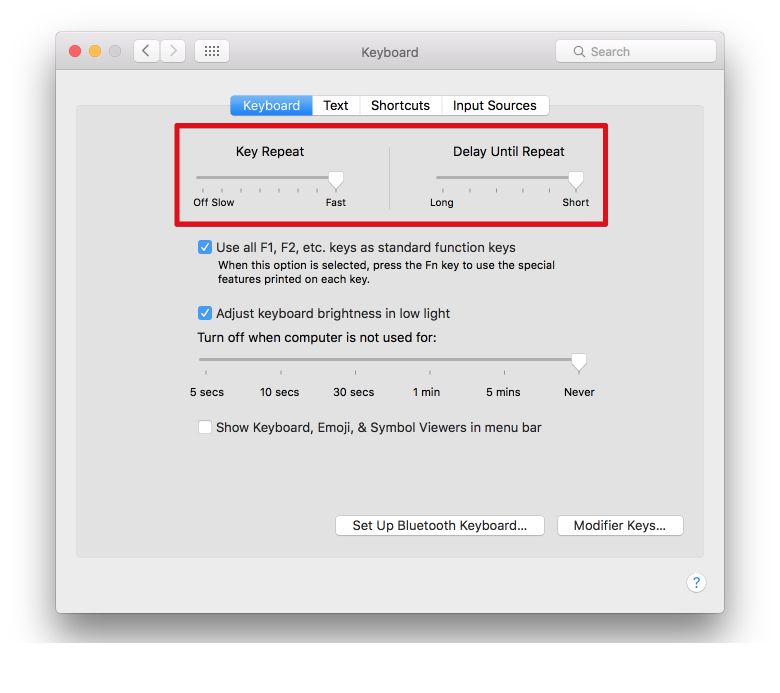
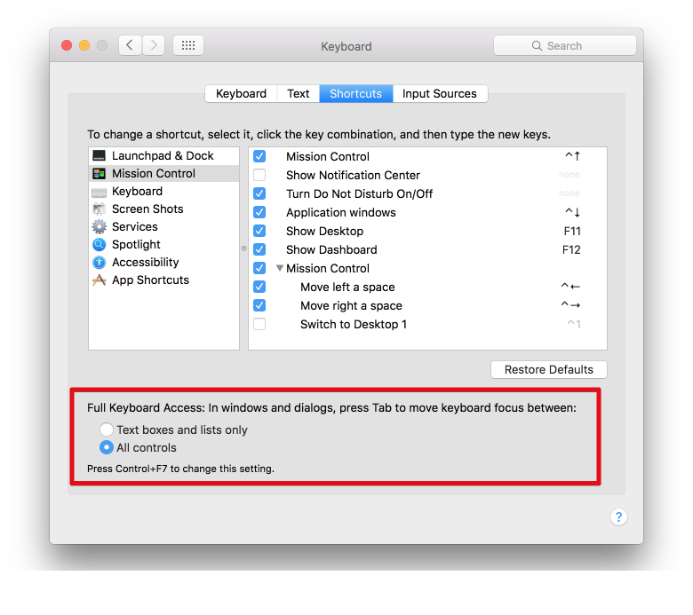

General
Every time you find yourself using the mouse, think about ways to do it without. In general, anything that you can do with the keyboard should be faster, because your hands can just stay on the keyboard.
Pay attention to menu items! If a keyboard shortcut is available, it will be displayed next to it.
Keyboard preferences
Key repeat: turn that sucker up! Delay until repeat: all the way down This will allow you to navigate, delete faster (if you are going to use backspace) etc.
Full keyboard access: all controls. So you can hit tab etc to move through application boxes.
Text editing OSX-wide
The ones with control might seem a bit weird if you're not used to using ctrl at all, but give them a shot. It has the benefit of not having to relocate your right hand to the arrow keys.
All of these shortcuts, work in all OSX text editting locations. That means your Chrome address bar, text fields on a webpage, when you edit a filename in the Finder, and yes, also Slack.
ctrl-a
beginning of line
ctrl-e
end of line
ctrl-k
delete line to end
cmd-left-arrow
beginning of line
cmd-right-arrow
end of line
alt-left arrow
move back 1 word
alt-right arrow
move forward 1 word
cmd-up and cmd-down
go to beginning or end, of text file or edit box
Combine these commands
Next to moving, you can combine them with shift to make selections, or with backspace to immediately delete them.
Tip:use alt-backspace when editting urls, it will remove everything until it encounters a slash.
alt-backspace
cmd-backspace
You can also use the up arrow if you have multiple lines for quicker multi-line selection.
cmd-shift-v
paste and match style This will make sure you paste it without any weird formatting.
OSX
cmd-tab or cmd-shift-tab
move forward or backwards between apps. Pro-tip: you can quit apps from this menu without having to open them!
cmd-` or cmd-shift-`
move forward or backwards between windows of application
cmd-shift-`
other direction
cmd-shift-?
open help menu item (works in every app) From here you can type commands to see if they are available, see where they are, and if they have a keyboard shortcut
cmd-h
hide current app
cmd-shift-h
hide all other apps
Chrome
cmd-l
go to address bar
cmd-t
open new tab
cmd-w
close tab
cmd-shift-t
re-open closed tab
cmd-shift-w
close all tabs in current window
cmd-shift-n
open incognito tab (handy to test without cookies)
cmd-1 to cmd-9
go to tabs 1 through 9 (9 being the last window, not number 9)
cmd-shift-[ and cmd-shift-]
Cycle through tabs. I prefer this one over arrow keys because you don't have to move your right hand towards the arrow keys.
cmd-[ and cmd-]
Go backwards or forwards in history.
cmd-enter
Submit form in a new tab
cmd-enter and alt-enter (while in address bar)
Open input in new tab (in the background)
Searching
This works in most apps (pdfs via Preview, TextEdit etc), demonstrated here with Chrome.
cmd-f
find in page (hit esc to stop)
cmd-g
move to next search hit
cmd-shift-g
other direction
escape
to stop searching
Chrome + mouse
cmd-click
open in new tab (in the background)
Random osx tricks
Drag drop file from desktop / finder into an upload field
finder
enter (when on a file in finder)
Rename file (protip, keyboard shortcuts to edit still work here :) )
cmd-backspace
remove file
cmd-shift-backspace
clear trash
arrows to navigate and open folders
type to select filenames
cmd-o
Open selection
cmd-shift-g
As long as you are in the finder, so also when you hit 'open' from an application, you can hit cmd-shift-g to open a textbox to quickly navigate to where you know you want to go. You can use tab here to complete the paths.
You can drag and drop from apps
Drag from finder to chrome
you can use the finder to easily drag files you're already viewing to an upload field
If you drag from finder to any 'open' dialog, it'll make that window navigate go to the same directory as the file is in.
Drag from chrome
If images are displayed normally (no CSS hacks), you can drag em to your desktop or another folder
Vimium
Vimium is an awesome productivity tool for chrome. The killer feature in my opinion is the way you can open links (in tabs) with just the keyboard.
f
Hit f and you'll see all the links available. Type one combination, and it'll open in the current tab. Use shift to make it open in a new tab in the background.
shift-w
Open tab to new window